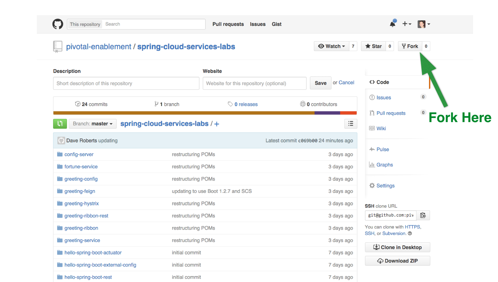

Set up the spring-cloud-services-labs Repo
1) Fork the labs repo to your account. Browse to: https://github.com/pivotal-enablement/spring-cloud-services-labs. Then fork the repo. 
2) GitHub displays your new fork. Copy the HTTPS clone URL from your fork.
3) Open a new terminal window. Clone your fork of the spring-cloud-services-labs. This contains several applications used to demonstrate cloud native architectures. Get familiar with the sub directories. We recommend organizing your work into a repos directory. A repos directory is where you will clone repositories and perform your work. The repos directory can be any directory on your local file system (e.g. ~/repos, C:\Users\Administrator\repos, etc.). Throughout the labs we will reference this directory as $REPOS_HOME. There is no need to create the $REPOS_HOME environment variable, it simply a placeholder used to help you organize lab content.
$ cd $REPOS_HOME
$ git clone <Your fork of the spring-cloud-services-labs repo - HTTPS clone URL>
$ cd spring-cloud-services-labs
$REPOS_HOME/spring-cloud-services/labs will be referred to $SPRING_CLOUD_SERVICES_LABS_HOME throughout the labs.
4) OPTIONAL STEP - Import applications into your IDE such as Spring Tool Suite (STS). Importing projects at the spring-cloud-services-labs level is recommended because there are several projects. Otherwise, use your favorite editor.
STS Import Help:
Select File > Import… Then select Maven > Existing Maven Projects. On the Import Maven Projects page, browse to your spring-cloud-services-labs directory. Make sure all projects are selected and click Finish.